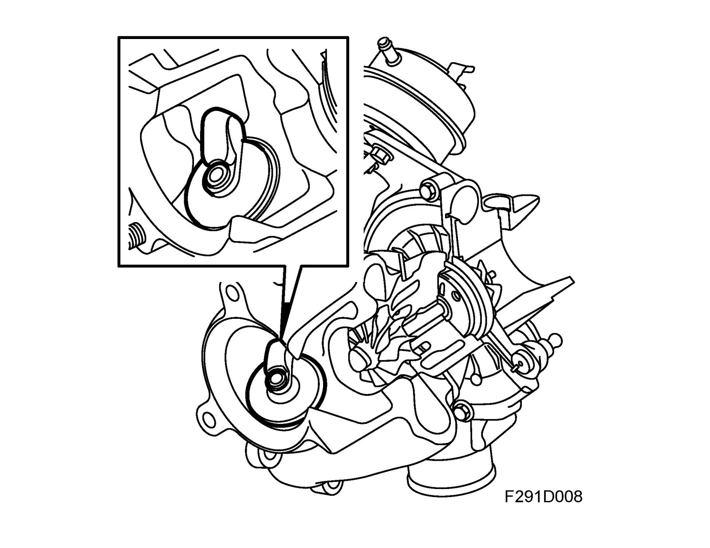
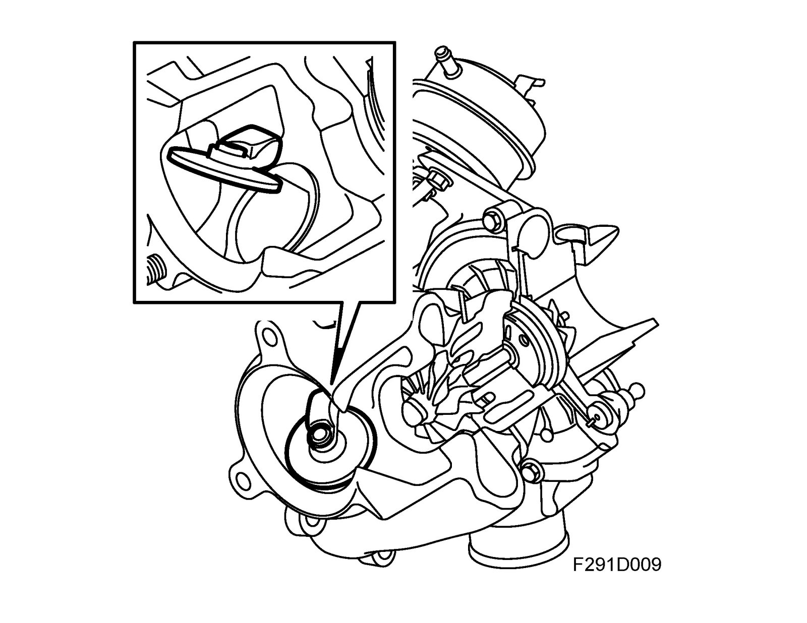
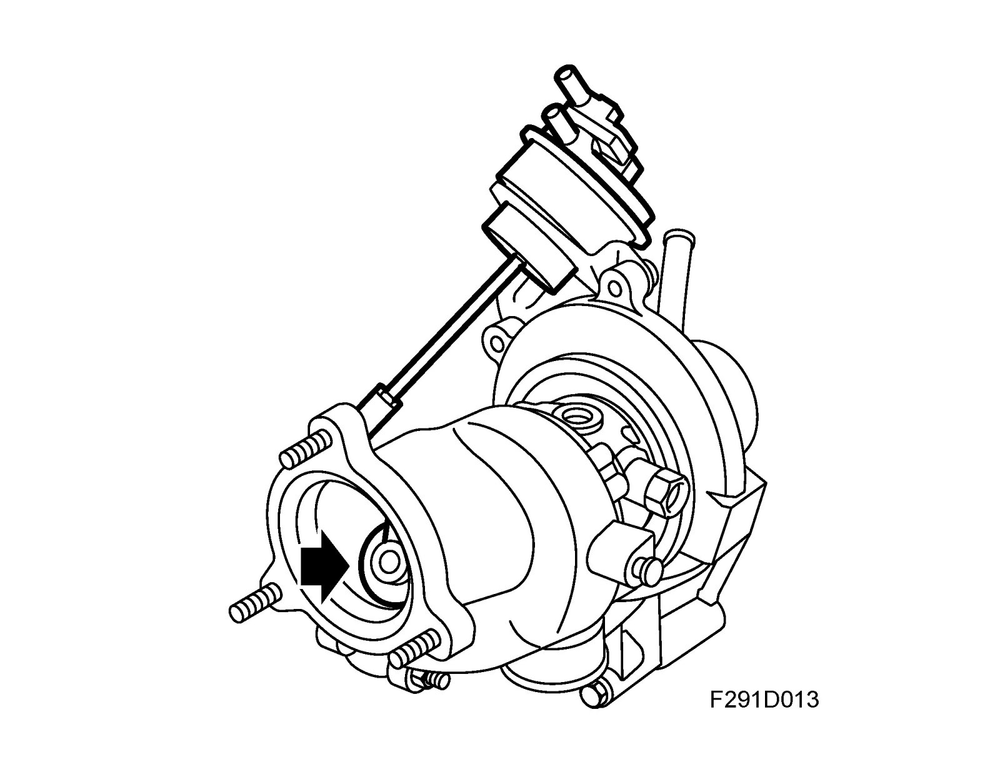
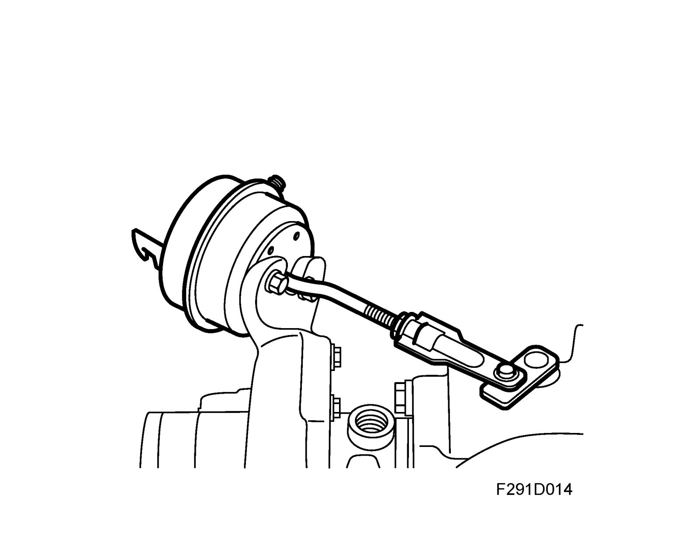
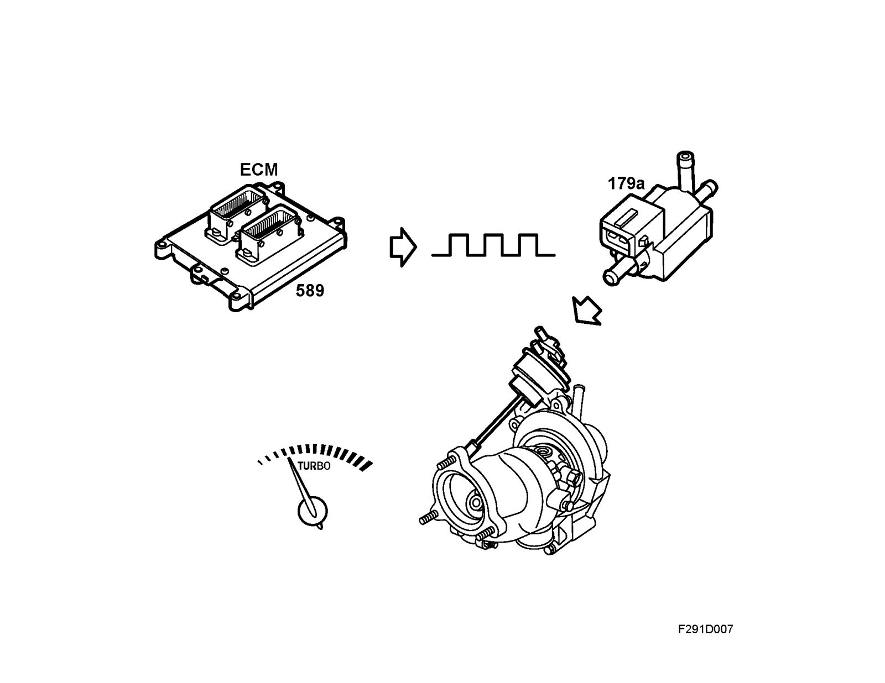
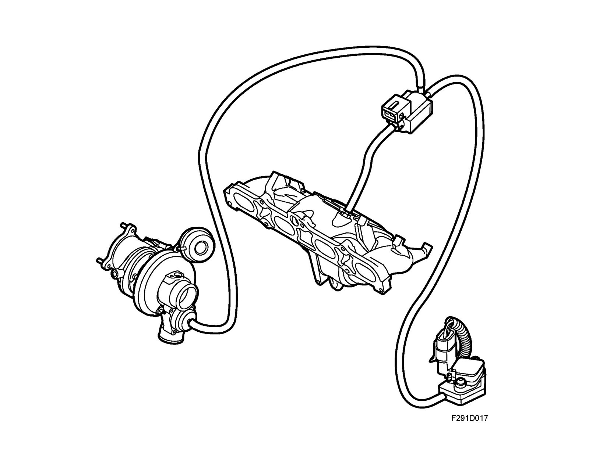
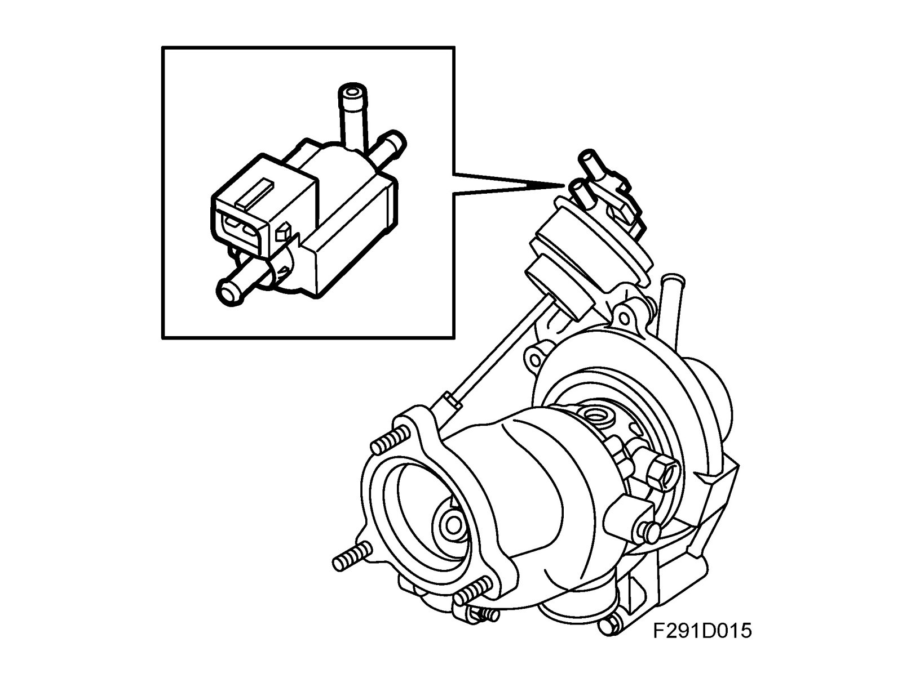
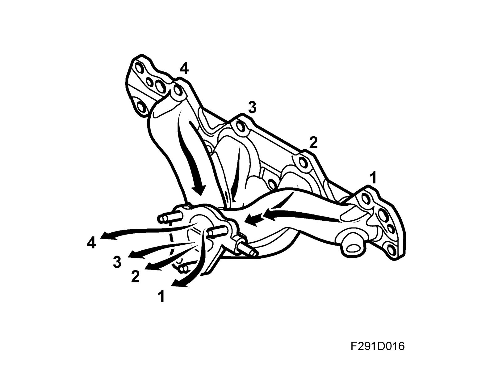
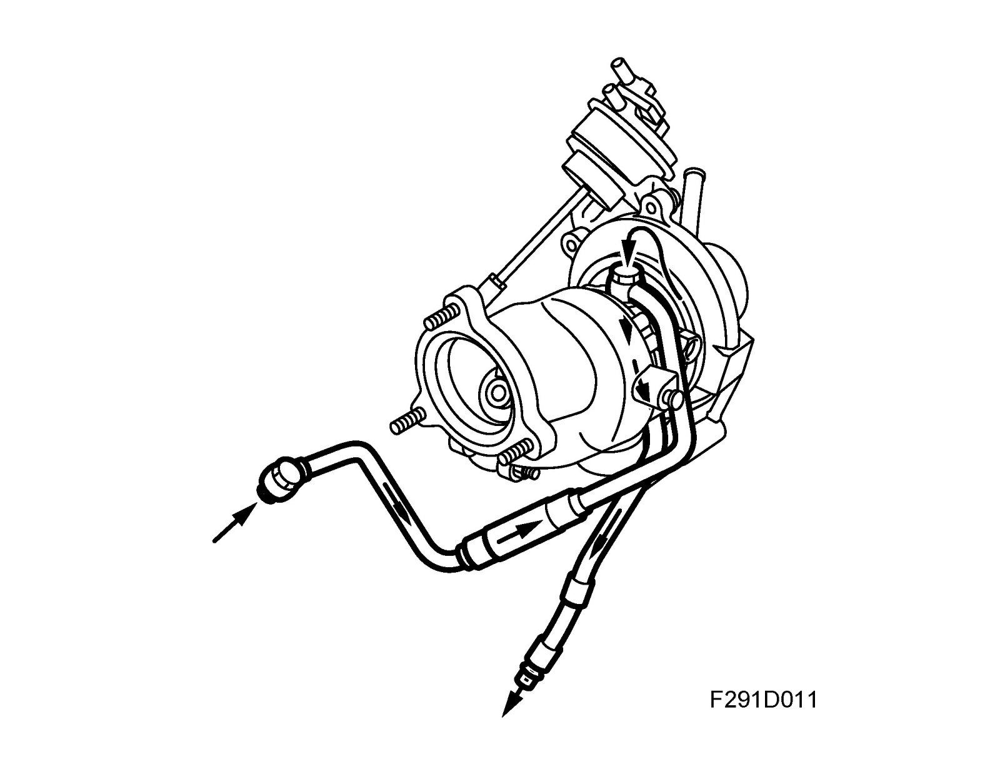
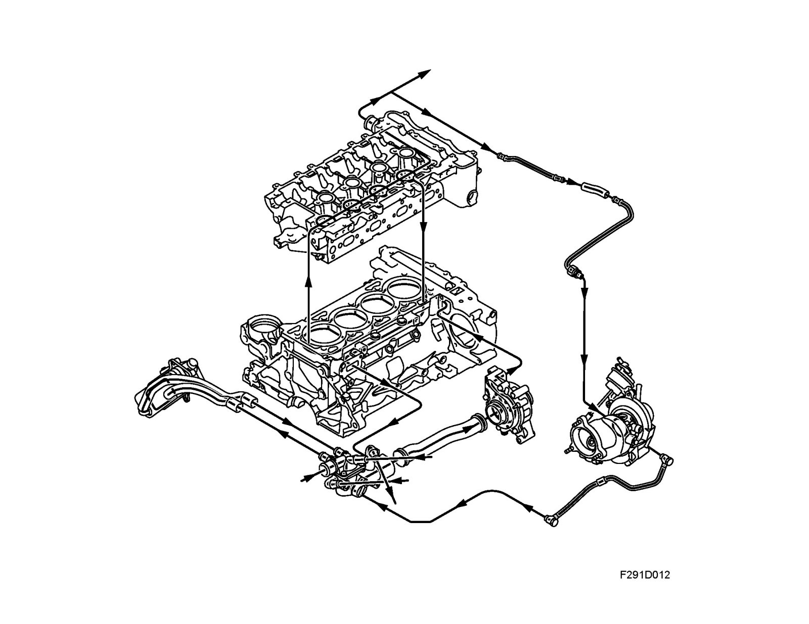

Detailed Description
Detailed descriptionTurbo control
The charge air pressure is mainly due to engine speed and load. At low engine loads, the exhaust gas volume driving the turbine is relatively small and all the exhaust gas needs to pass the turbine in order to drive the turbine wheel and compressor.
When the engine load is somewhat higher, the exhaust gas volume will also be larger. This means that the energy driving the turbo is greater and the compressor therefore forces more air into the engine.
If the engine load rises further, the exhaust gas volume produced by the engine will be greater than that needed to drive the compressor in order to provide the correct air mass per combustion. At high loads, the volume of gases reaching the turbine must therefore be limited so that the turbocharger produces the correct airflow. This is achieved with a valve, called wastegate, opening a bypass passage parallel with the turbine. The excess gas not required to drive the turbine passes through this passage.
Turbo control at low loads
At low loads, the wastegate valve is closed. All the exhaust gas then passes through the turbine.

Turbo control at high loads
At high loads, the volume of exhaust gas is greater, which makes the turbine wheel rotate faster. This delivers a greater air displacement to the engine.
When the air displacement becomes so large that the current air mass per combustion cannot be controlled with the throttle alone, the turbo must be regulated. This is done by opening the wastegate valve so that some of the exhaust gas passes through the wastegate. Consequently, this gas does not contribute to driving the turbine and the turbine speed will be regulated so that the turbo air displacement will be correct.

Wastegate valve

The wastegate valve is a clack valve that opens and closes a bypass passage beside the turbine wheel. The valve is controlled by a diaphragm box on the compressor housing.
Controlling the wastegate valve
The wastegate valve is acted on by a rod from the diaphragm box located on the compressor housing. A coil spring in the diaphragm box acts in a closing direction while the pressure of the diaphragm acts in an opening direction.

The engine management system supplies a solenoid valve with a PWM signal. The solenoid valve then allows pressure from the compressor to pass. When the pressure overcomes the spring force in the diaphragm box the rod will begin to move, opening the wastegate valve a corresponding amount. As the engine management system varies the PWM signal, the wastegate valve opening will change and the turbine speed can be regulated.

Bypass valve

Accelerator depressed
When the turbocharger is working, pressure builds up in the turbocharger delivery pipe, throttle body and intake manifold. As long as the throttle disc is open, there is pressure on both sides of the bypass control valve diaphragm which is held closed partly by the force of the integral spring and partly by the pressure in the intake manifold.
When the accelerator is released
When the throttle disc closes, a vacuum is quickly built up in the intake manifold by the combustion while the pressure before the throttle disc still remains. To avoid pressure shock in the intake manifold when the throttle disc again opens, the pressure before the throttle disc must be released. The bypass valve signal line, which is connected to the outlet before the throttle disc during normal conditions, is then connected to the outlet after the throttle disc through a solenoid valve controlled by Trionic. For further information on the solenoid valve, refer to "Trionic T8 engine management system".
Through the vacuum in the intake manifold, a vacuum on the spring side of the bypass valve is also achieved. This vacuum makes the valve open and release the pressure from the compressor housing and intake system into the intake hose. This connection is active until the pressure before the throttle disc has again stabilized. Subsequently, the connection between the signal line and the outlet before the throttle disc will be restored.
Diaphragm box

The diaphragm box is controlled through a hose from the turbocharger via a solenoid valve. A coil spring in the diaphragm box normally keeps the wastegate valve closed. When the engine management system wants to regulate the charge air pressure, it sends a PWM signal to the solenoid valve to open it. The charge air pressure via the hose from the turbocharger overcomes the force of the coil spring in the diaphragm box and the wastegate valve starts to open.
Solenoid valve

The solenoid valve is controlled by the engine control module via a PWM signal that opens the valve to allow the charge air pressure to act on the wastegate valve.
Exhaust manifold

The exhaust manifold is partially pulse separated. This means that the exhaust gas from cylinders 1 and 4 are led to the turbine wheel separately from the exhaust gas from cylinder 2 and 3. This offers the advantage of shorter reaction times, i.e. faster response to accelerator pedal movement, thanks to the exhaust pulses being more distinct when they are not disturbed by pulses from the other cylinders and that flushing the cylinders is not disturbed by exhaust pulses from the other cylinders.
Lubrication

The turbo shaft, which rotates at a very high speed, is precisely balanced and supported in fixed slide bearing bushings. This bearing arrangement demands a high flow of oil, which makes the shaft rotate on a cushion of oil. This oil comes from the engine lubricating system through a special oil line leading from the oil filter adapter housing. The return oil passes to the engine oil pan. The seal between the shaft and the bearing housing comprises rings (similar to piston rings) located in grooves in the shaft.
Cooling

The turbocharger is water-cooled, which lowers the temperature in the bearing housing considerably. Temperature reduction reduces the risk of the oil boiling and the damages that can arise from such. Coolant is taken via a pipe from the cylinder head. After passing the bearing housing, coolant is led further via pipes to the thermostat housing. When the engine has been switched off and the coolant pump has stopped, coolant in the system self-circulates through thermo-siphoning (The illustration shows coolant flow when the engine is running).